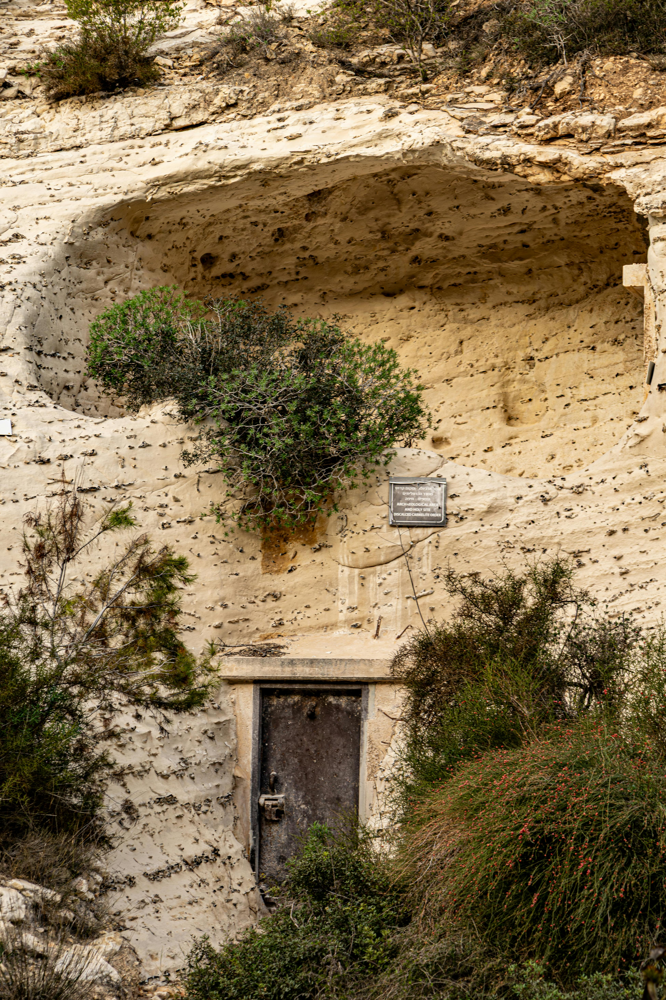

Mahdia
150k
Amphithéâtre d'El Jem
Le "Colisée" africain, vestige romain d'une conservation exceptionnelle (UNESCO)

RetourEntre mosaïques romaines, azur méditerranéen et sables du Sahara
La Tunisie est un joyau méditerranéen où chaque pierre raconte une épopée. De la puissance disparue de Carthage aux gradins vertigineux de l'amphithéâtre d'El Jem, le pays offre une densité archéologique exceptionnelle. Surnommée la "Verte", elle séduit par le charme intemporel des ruelles bleues et blanches de Sidi Bou Saïd, la ferveur mystique de Kairouan et la douceur de vivre de l'île de Djerba. Plus au sud, les paysages troglodytiques de Matmata et les dunes de Douz ouvrent les portes du grand Sahara, offrant un contraste saisissant avec les stations balnéaires raffinées de Hammamet.
Découvrez les 15 sites classés et emblématiques de Tunisie
Le "Colisée" africain, vestige romain d'une conservation exceptionnelle (UNESCO)

Symbole de l'azur méditerranéen avec ses maisons bleues et blanches

L'ancienne cité punique et ses thermes romains face à la mer (UNESCO)

Dédale de souks, palais et mosquées au cœur historique (UNESCO)

La quatrième ville sainte de l'islam et son architecture aghlabide (UNESCO)

Architecture souterraine berbère et décor naturel de Star Wars

Le point de départ des caravanes vers le Grand Erg Oriental

"L'île des Lotophages" : artisanat, plages et patrimoine multiculturel

Lac et zones humides, escale vitale pour les oiseaux migrateurs (UNESCO)

La petite ville romaine la mieux conservée d'Afrique du Nord (UNESCO)

Greniers fortifiés spectaculaires et architecture berbère unique

Le Ribat et la grande mosquée d'une cité portuaire historique (UNESCO)
Station balnéaire mythique, son fort et ses plages de jasmin
Forteresse côtière majestueuse et mausolée de Bourguiba
La plus grande collection de mosaïques romaines au monde
La terre des Phéniciens et de la révolution du Jasmin.
La Tunisie possède une identité forgée par 3000 ans d'histoire, du génie maritime de Carthage à la sagesse des philosophes de Kairouan. Carrefour des mondes berbère, arabe, andalou et ottoman, elle exprime ce brassage à travers un art de vivre unique. On le retrouve dans les senteurs du jasmin, le goût raffiné des pâtisseries au miel, et l'artisanat délicat des céramiques de Nabeul. La Tunisie est aussi une nation pionnière, foyer de la pensée moderne arabe et de la quête de liberté, où l'hospitalité méditerranéenne est un art qui se partage avec passion.
La gloire d'Hannibal Barca et le génie commercial des fondateurs de Carthage sur les rives méditerranéennes.
L'âge d'or de Kairouan, centre mondial de savoir, d'architecture et de spiritualité au IXe siècle.
Une maîtrise artistique millénaire faisant du Bardo le plus grand conservatoire d'images antiques au monde.
Une culture du bien-être, entre douceur des hammams, parfum des jardins et finesse de la table.

L'artisanat d'excellence de Tunisie. Des céramiques de Nabeul aux tapis de Kairouan.
 Artisanat
Artisanat
Plats et jarres peints à la main avec des motifs traditionnels bleus et jaunes, cuits au four traditionnel.
 UNESCO
UNESCO
Tapis ras en laine aux motifs géométriques berbères, symbole du savoir-faire des tisserandes du centre.
 Icone
Icone
Le couvre-chef national en laine feutrée, fabriqué dans les ateliers historiques de la médina de Tunis.
Huile de première pression à froid issue des oliveraies millénaires du Sahel tunisien.
Pendentifs et bracelets en corail rouge véritable pécé dans les eaux de la côte nord.
Sacoches et babouches en cuir souple travaillé selon les techniques artisanales de Tunis.

Gammarth, Luxe Absolu

Hammamet, Chic & Design

Djerba, Sérénité Royale

Gammarth, Prestige Mondial

Sousse, Thalasso & Plage

Tunis, Palais Médina
La cuisine tunisienne est un feu d'artifice de saveurs pimentées à la harissa, d'huile d'olive parfumée et de produits frais du terroir.
Le plat national, souvent servi avec du poisson, de l'agneau ou du poulet, et relevé d'une sauce tomate épicée.
Feuille de pâte croustillante garnie d'un œuf coulant, de thon et de câpres, frite à la perfection.
Soupe de pois chiches au cumin et harissa, servie sur du pain rassis, plat réconfortant par excellence.
Œufs pochés dans une sauce tomate pimentée aux poivrons et aux merguez grillées.
Salade de poivrons et tomates grillés, broyés et assaisonnés d'ail, d'huile d'olive et de thon.
Gratin d'œufs, viande, fromage et pommes de terre, bien différent du tajine maghrébin classique.
Pâtisserie de semoule fourrée aux dattes, frite et trempée dans le miel, spécialité de Kairouan.
Thé à la menthe très sucré servi avec des pignons de pin flottant en surface.
Beignet rond sucré, spécialité croustillante de Sidi Bou Saïd à déguster chaud.
Ragoût de légumes (oignons, poivrons, tomates) mijotés, servi avec un œuf au plat.
Dorade ou loup de mer pécé du jour, cuisiné en sauce ou grillé au feu de bois.
Boisson fraîche artisanale à base de citrons entiers broyés, parfaite pour l'été.
Vibrez au rythme des festivals internationaux et des fêtes traditionnelles tunisiennes.
Spectacles de musique et de théâtre dans l'amphithéâtre antique (Juillet-Août).
Le plus ancien festival de cinéma d'Afrique et du monde arabe à Tunis.
Célébration des cultures sahariennes : courses de dromadaires et poésie nomade (Décembre).
Les saisons parfaites. Le climat est doux, idéal pour visiter les sites archéologiques et les médinas sans la chaleur intense de l'été ou la pluie de l'hiver.
La saison haute pour les amateurs de plage et de festivals. Les côtes (Hammamet, Sousse, Djerba) sont animées malgré des températures élevées.
La Tunisie est une destination accueillante. Vigilance normale requise dans les zones touristiques. Évitez les zones frontalières désertiques.
Excellentes infrastructures médicales privées. Buvez de l'eau en bouteille. Protection solaire indispensable toute l'année.
Exemption de visa pour de nombreux pays (UE, Maghreb, etc.) pour des séjours touristiques de moins de 90 jours. Vérifiez selon votre nationalité.
Dinar Tunisien (TND). Le change est facile. Les cartes de crédit sont largement acceptées dans les hôtels et les grands magasins.
Expert Archéologie & Carthage
Docteur en histoire, Hédi vous fera découvrir les secrets de la grandeur punique et romaine en Tunisie.
Experte Culture & Médinas
Passionnée par l'art de vivre tunisois, Leila vous guidera dans les palais cachés et les meilleurs souks de la capitale.
Guide Sahara & Ksour
Spécialiste du Grand Sud, Anis vous emmènera explorer les paysages lunaires de Tataouine et les dunes de Douz.